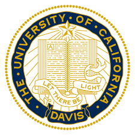
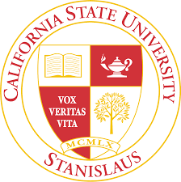

I am currently pursuing a second bachelor's degree after earning a BA in History from UC Davis in 2003, an MA in History from CSU Stanislaus in 2009 and teaching high school for nearly 20 years. I live in Northern California with my husband and 2 daughters (12 & 8). I am interested in gaining knowledge and experience leading to a career in mobile android development, frontend development or full-stack development. I am excited to learn new things and gain experience that will lead me to a new career!
 